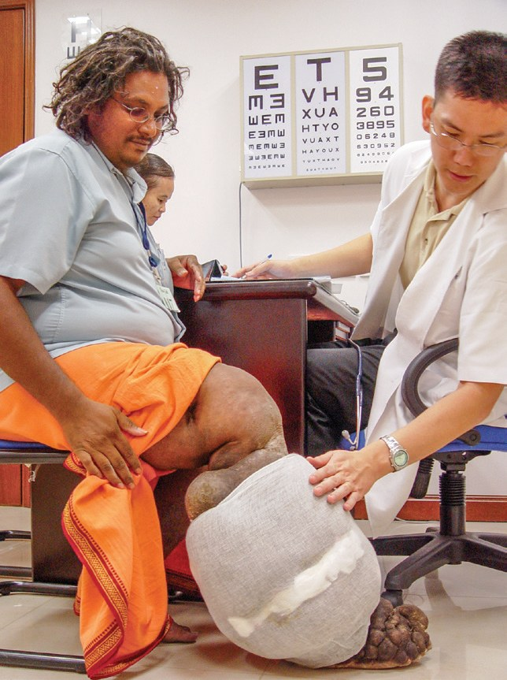
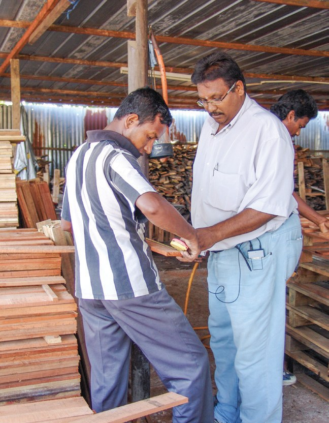
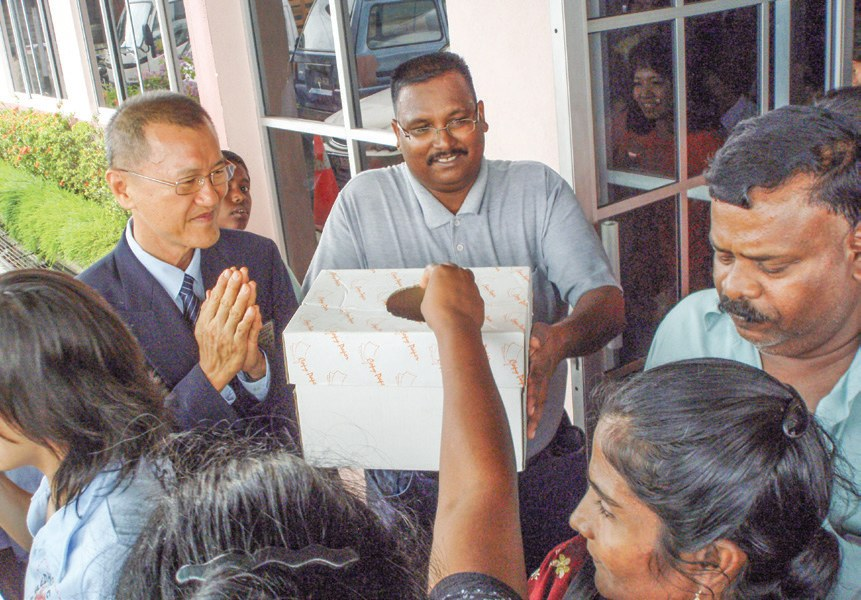
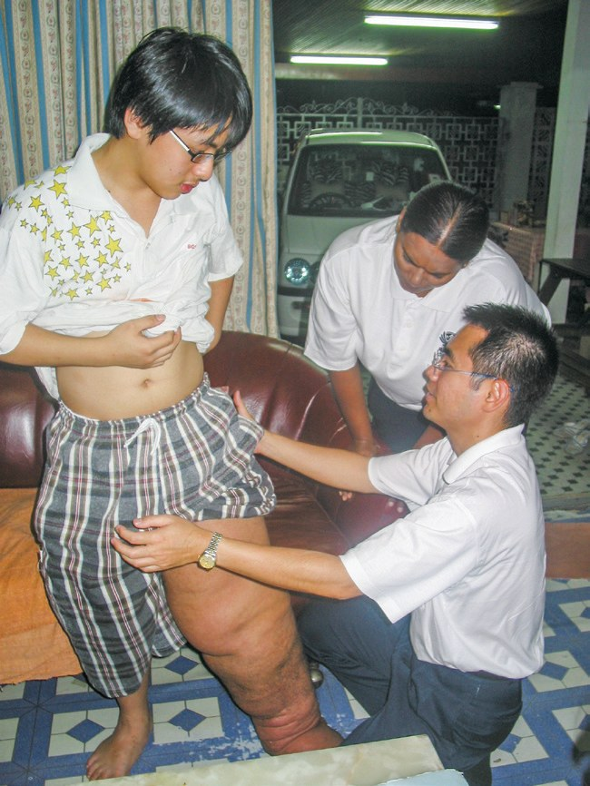
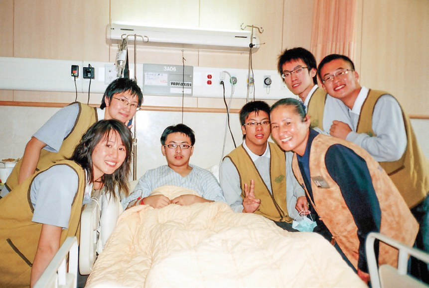
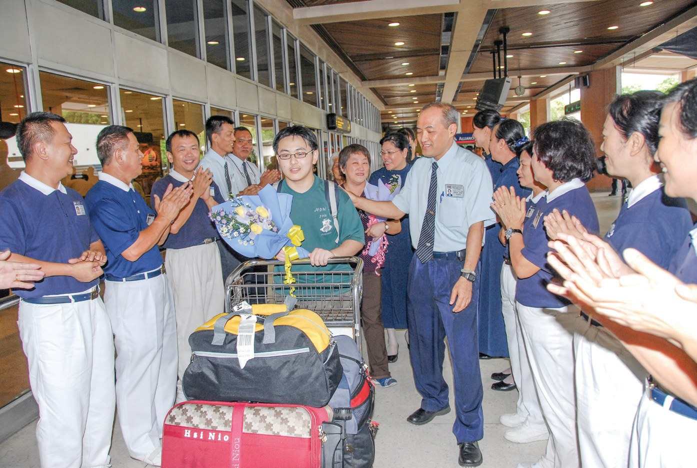

跨海援助
接力送愛
醫生都說要截肢，還有別的路嗎？

先別急著下結論，讀完再說說你的想法～
這一篇講兩個跨海求醫的故事。一位印度裔青年的腳腫得像大樹，一個沙巴男孩的腿也腫了起來。
雪隆、馬六甲、亞庇的志工一棒接一棒，把他們送到花蓮慈濟醫院。
下面是原書的節錄，紅色底線是我們替你標出的轉折點。
讀之前：你覺得陪伴一個病人，最難的是什麼？
腳步留下血痕
一位篤信印度教的青年，走進了佛堂。閱讀引導
但不幸在23歲時遭逢車禍，造成右腿骨折與左膝韌帶斷裂，術後整隻右腳日漸腫大，皮膚也因流膿水而粗糙龜裂、發出臭味。
他飽受折磨，四處求醫，但診斷結果都是必須截肢。

要截肢……

兩人走進佛堂，地板隨著肯納亞山的腳步出現血水痕跡……
篤信印度教的他，原先認為華人佛教團體應該只照顧華人，但經此關懷後，他瞭解到原來慈濟助人是不分種族與宗教。

志工就來幫他護理傷口。
隔年3月，肯納亞山申請到社會保險金，便請慈濟停止生活補助。

自己請慈濟停下補助。
22公斤的腫瘤
花蓮慈院翻遍文獻，要試一試「不截肢」。閱讀引導
肯納亞山腿傷罕見，治療困難，慈院團隊翻遍文獻，才找到不截肢的方法，經多次討論評估後，決定接受這項不可能的任務。
猜一猜閱讀引導
肯納亞山腿上的腫瘤，有多重？
焦急等候的肯納亞山母親一聽到好消息，興奮的緊抱住李主任，並且單腳屈膝，低頭親吻兩位醫師的手，致上最敬禮。
親吻醫師的手。
打破了兩個不可能：第一是「華人不可能幫助印度人」，第二是「不可能不截肢」。
「因為有上人的祝福和醫師的妙手，醫好了我的腳，現在我也想付出力量幫助別人。」
肯納亞山向上人說・p.380要拿來幫助別人！
從病人到志工
新的腳，開車接送別的病人。閱讀引導
肯納亞山於4月2日，首次到巴生義診中心當志工為病患服務，跟著其他志工駕車接送照顧戶看診。



現在接送別人。
肯納亞山在腿病復發的五年間，雖因行動不便與心理因素，鮮少參與志工活動，但仍多次捐款，表達感謝。
2016年12月2日，肯納亞山昏迷送醫……27日卻因嚴重感染導致多重器官衰竭，不幸於巴生中央醫院往生。
慈濟人總是『把握當下』付出，同時『恆持剎那』，每一堂示現的人生課程，都永遠牢記心中……
上人開示・p.383一千六百隻紙鶴
一個沙巴男孩，也是同樣的病。閱讀引導
1998年，九歲的蘇翊竑和父親遭遇了一場車禍，導致左腿斷裂，父親也單眼失明。

2005年，蘇翊竑在登嘉樓工作的姑姑蘇麗芬，得知慈濟曾幫助過同樣症狀的肯納亞山，於是向慈濟登嘉樓聯絡處求援……

救了另一個孩子！
「承擔這個使命的當下，沒有太多時間去思考得與失，只感恩有這分因緣，心中最希望看到這孩子恢復以往的健康。」
陪同赴臺的志工鄭月芳表示・p.385
住院期間，蘇翊竑前後進行了十次手術。
同時，蘇翊竑也用護理人員結緣的色紙，摺了一千六百餘隻紙鶴……
還摺了一千六百隻紙鶴。

由於弟弟罹患的並不是普通的疾病，所以許多人會用異樣的眼光看待，而他也不太願意讓別人知道太多，直到去了花蓮，認識了許多志工，才變得開朗……
治喪期間，慈濟志工仍陪伴蘇家度過喪親之痛。
他以病為友，樂觀面對病情的態度及笑容，卻是留給大家最美好的回憶。
書中寫道・p.387停一停：誰讓你記住了？閱讀引導
選一位你印象最深的人。沒有標準答案。
有人跪謝醫師，有人用新的腳幫助人，有人摺了一千多隻紙鶴。哪一位讓你最有感覺？

一起回頭看看吧～
回望
依本章原文整理，每一條都標了原書頁碼。閱讀引導
背後原因
為什麼要跨海求醫

小川馬來西亞也有醫院，為什麼要送到臺灣？
- 診斷都是截肢
四處求醫，但診斷結果都是必須截肢。p.377
- 慈院評估
請花蓮慈濟醫院評估「不截肢」的可能性。p.379
- 一棒接一棒
任何一個地方只要有慈濟人，就是互相接力。p.382
後續發展
兩段長長的陪伴

小禾志工陪了他們多少年？
- 2003
肯納亞山走進巴生聯絡處。p.378
- 2004.12.23
肯納亞山抵達花蓮慈院。p.379
- 2005.4.2
肯納亞山首次到義診中心當志工。p.381
- 2005.12.6
亞庇志工訪視蘇翊竑。p.384
- 2009.5
蘇翊竑第二次赴臺，九次手術後返馬。p.386
- 2016.12
肯納亞山往生，志工陪伴到最後。p.382
翻轉手心
一條腿帶來的改變
小禾被幫助的人，後來影響了誰？
- 第一圈肯納亞山
日存馬幣25仙，把祝福獻給慈濟。p.379
- 第二圈照顧戶
肯納亞山駕車接送照顧戶看診。p.381
- 第三圈蘇翊竑
姑姑得知肯納亞山的故事，向慈濟求援。p.384
以上只整理本章寫到的事；書裡沒寫到的，我們不替它下結論。
回頭看讀前的選擇閱讀引導
慈院翻遍文獻才找到不截肢的方法（p.379）；志工從2003年一路陪肯納亞山到2016年（p.378–382）；兩人最後都往生了，但留下了笑容（p.387）。醫生、陪伴、結局，志工都一起走過。
那這些陪伴算不算白費？
只有你自己看得到喔！
準備好了就一起出發～